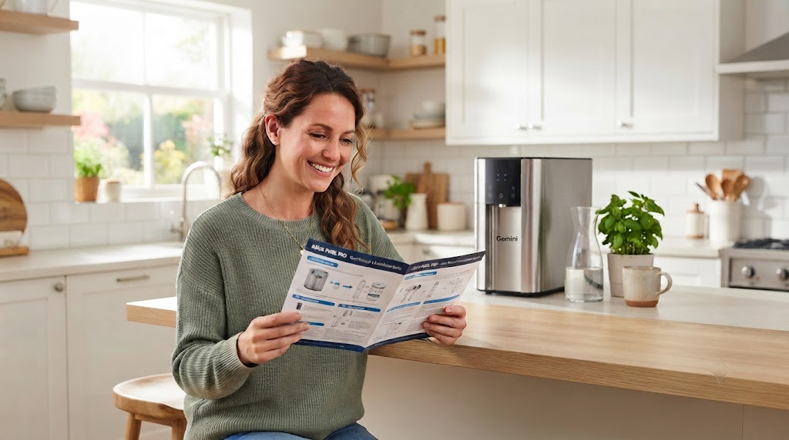

Frequently asked questions
Straight answers on water softeners, RO and UV purifiers, installation and service in Bengaluru. Can't find yours? Ask us directly.
General
What is a water softener?
A water softener is a water-treatment system designed primarily to reduce hardness-causing minerals such as calcium and magnesium.
Is a water softener the same as an RO purifier?
No. They perform different functions. A water softener primarily addresses water hardness, while an RO purifier is designed for specific drinking-water purification requirements.
Which water softener is suitable for my home?
The appropriate system depends on water hardness, source, daily consumption, number of users and application. We work this out with you before recommending anything.
Do you provide water softener solutions in Bangalore?
Yes. SV Marketing provides ZeroB water softener solutions for residential and commercial requirements in Bangalore.
How do I know if my water is hard?
Water hardness can be measured through a water-quality or hardness test. Visible scale buildup and soap-related issues can indicate hardness, but testing gives a more reliable basis for selecting a treatment system.
What is TDS, and does it matter?
TDS stands for total dissolved solids — the total amount of dissolved minerals and salts in water, usually shown in ppm or mg/L. A TDS meter gives a quick reading, but it does not tell you which substances are present or whether the water is microbiologically safe, so it is one input among several.
Can I get a water quality assessment before buying?
Yes. Assessing the source water and understanding the hardness and intended usage can help determine the appropriate water-treatment solution before installation.
Which areas of Bengaluru do you serve?
We are based on Magadi Main Road near NICE Road and serve customers across Bengaluru, subject to service availability. Share your area with us and we will confirm.
Water softeners
How does a water softener work?
A water softener typically uses an ion-exchange process to reduce calcium and magnesium ions responsible for water hardness. The softened water helps reduce scale formation in plumbing, appliances and fixtures.
What are the signs of hard water?
Common signs include white scale on taps and shower fittings, soap that does not lather easily, dry-feeling skin, dull-looking clothes and scale buildup inside water-using appliances.
Why should I install a water softener at home?
A water softener can help reduce the effects of hard water throughout your home, including scale buildup on plumbing fixtures, bathrooms, geysers and other water-using appliances.
Can a water softener be used for the entire house?
Yes. Whole-house water softeners are designed to treat water entering the home so that multiple outlets can receive softened water.
Will a water softener remove TDS from water?
No. A conventional water softener is primarily designed to address hardness caused by calcium and magnesium. It is not a substitute for an RO purifier or other treatment designed to reduce dissolved solids.
Does a water softener improve drinking water?
A water softener and a drinking-water purifier serve different purposes. Whether softened water is suitable for drinking depends on the system, water chemistry and the treatment setup. Drinking-water purification should be selected based on the quality of the source water.
How often does a water softener need maintenance?
Maintenance depends on the type of system, water quality, household usage and operating conditions. Regular servicing and checking the system according to the manufacturer's recommendations helps maintain performance.
Does a water softener require salt?
Many conventional ion-exchange water softeners use salt during the regeneration process. The exact requirement depends on the type and model of water softener installed.
How much does a water softener cost?
The cost depends on the water hardness, household size, water consumption, system capacity, installation requirements and the type of softener selected. We recommend evaluating the requirement before choosing a system.
How do I choose the right water softener capacity?
Capacity depends on factors such as water hardness, number of users, daily water consumption and the amount of water that needs to be treated. These factors should be considered before selecting the system size.
RO & UV purifiers
What is the difference between RO and UV purifiers?
RO (reverse osmosis) reduces dissolved solids such as excess salts. UV inactivates microorganisms such as bacteria and viruses but does not change TDS or hardness. Which one suits you depends on your source water and test readings.
Which purifier is right for borewell water?
Borewell water is often high in TDS and hardness, so it commonly needs RO, with hardness handled upstream. The right choice depends on your test result.
Do I need a softener if I already have an RO purifier?
Not always, but hardness can shorten the life of RO membranes and cause scaling in appliances. If your water is hard, a softener upstream helps protect the RO unit. A water test shows whether you need one.
Does an RO purifier waste water?
RO systems produce reject water along with purified water. How much depends on the system, the incoming TDS and operating conditions. We can explain the figures for the model we recommend.
Will a UV purifier reduce TDS?
No. UV treatment is designed to inactivate microorganisms. It does not reduce TDS, hardness or dissolved chemicals.
Can I use a UV purifier with borewell water?
Only after testing. UV works best on clear water, and borewell water is often high in TDS or hardness that UV does not address, so it commonly needs other treatment first.
How often do filters, membranes and UV lamps need replacing?
Replacement intervals depend on the model, your water quality and how much you use. We tell you the schedule that applies to your system at installation.
Can a purifier be installed for an office or institution?
Yes. Offices, schools and institutional kitchens can be served by systems sized to daily consumption and headcount. We evaluate the requirement before recommending.
Installation & service
Do you provide installation in Bangalore?
Yes. SV Marketing provides water softener solutions and installation support for residential and commercial requirements in Bangalore, subject to site and system requirements.
Can water softeners be installed in apartments?
Yes. Water softening solutions can be considered for apartments, villas and other residential properties. The appropriate setup depends on available installation space, plumbing configuration and the requirement of the property.
Can you install water softeners for commercial properties?
Yes. Water treatment requirements can be evaluated for offices, commercial buildings, hotels, institutions and other properties. System selection depends on water usage and application.
What does installation involve?
We check the site, size the system, then fit and commission it on-site. Before we begin, we confirm the inlet line, drain point, power point and floor space.
How long does installation take?
It depends on the system and the site. A site check tells us how much work is involved, and we confirm the timeline with you before starting.
What do you need from my site before installation?
Typically floor space near the inlet line, a power point, a nearby drain point and access to the plumbing. For apartments, any building or society permission that applies.
Do you provide service after installation?
Yes. We coordinate service visits after installation so the system keeps performing. Ask us what applies to your model.
How do I book a free water test?
Call +91 99023 40759, message us on WhatsApp or use the contact page. Tell us your area and what you are seeing, and we will arrange a visit.
Didn't find your answer?
Tell us about your water and what's bothering you. We'll reply with a straight answer, not a sales pitch.